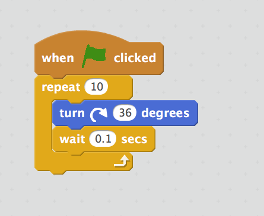

2019-02-04 00:00

In this article, Michael shares his experience of teaching kids to program.
Here's what he covers:
Organization of the learning process
The learning process is conducted as part of corporate social responsibility: a company provides a room with equipment and connects employees that want to try themselves in the role of teachers with employees that want their kids educated. All this is done voluntarily.
Potential teachers are divided into groups so that each group contains three teachers: experienced one and two novice ones. Such a group of three teachers leads a group of students. Students are divided into groups by age and skills.
I participated in the program as a teacher for the second time in 2018. The kids were around ten years old. Our group was active from October to December of 2018 each Saturday, 10:00-12:00. Using my position as a teacher, I've also brought my wife in as a student.
Learning plan
The first time I participated in the program, our group taught kids rather mindlessly: we were coming up with simple tasks to explain different operators. By the end of the course we had nothing concrete to evaluate, analyze, and share.
This second time I decided we are going to create a memory game with kids. I decided to consider the course successful if by the end of the course each kid would be able to create a simple memory game from scratch in an hour.
To achieve that, we were recreating the same game from scratch each lesson. I'd like to stress that we did not use personal accounts to save progress. Our task was to save the skill of game creation in the head, not a PC.
Memory game
Let's see what the memory game is.
1) In the simplest case we have 16 cards, only 8 of them are unique, the rest 8 are duplicates of the unique ones.

As you can see, we only have two cards with a cat, only two cards with a dog, etc..
2) At the start we shuffle the cards and place them with their faces down.

3) The first game player turns a pair of cards.

4) If the cards differ they are once again turned face down.
5) The next player turns another pair of cards.

6) If the cards are the same, they are removed from the field.

The goal of the game is to remove all cards from the field. There's no competition here so the game can be played alone.
From one hand, the memory game is rather simple. From the other hand, the game implementation requires essential functionality each more or less complex game has:
Development tools
We used Scratch as our development tool. Scratch is a great tool to teach kids to program because each action, each operation is represented graphically.
For example, you can rotate a cat 360 degrees in 1 second using the following script:

Here's how it looks like in action:

I'd like to stress that Scratch is a rather successful solution to represent code graphically. For example, a paid solution by SAP uses similar concept of cubes to program logic:

Users can only input values into predefined fields. If users want more functionality they have to resort to scripts.
Personally, I have never witnessed any slowdown in Scratch, and there were many in SAP's solution.
The first lesson
The first lesson was introductory, we didn't use PCs.
The plan was to:
1) Meeting
Both teachers and students stand in a circle. This equalizes everyone and makes everyone a team member.
The first team member tells his name and why he decided to take the course. The second team member and the rest first repeat the name and the story of each previous team member before telling their own names and stories.
Here's how it looks like:
Such a format of meeting has the following objectives:
2) Memory game with cards
Students are eager to play tabletop games. During the game party teachers say out loud each step in the game's algorithm.
After a couple of parties it's time to find out what algorithm is.
3) The concept of algorithm
Students like to go to blackboard and write, so we ask each student to come and write a single step of the algorithm at a time. The most active student should execute the algorithm by following it strictly.
4) The algorithm of the game
Ask students to compose the game's algorithm. Again, let students come to the blackboard and add one step of the algorithm at a time. Once the algorithm is ready, play the game with cards once again. Now, each student should say the algorithm's step he executes.
Here's how it looks like:
5) Analyze the lesson
That's it for the first lesson. Teachers finally have time to discuss the lesson: discuss the kids, approaches to shy and active kids, plan next lessons.
We had the following decisions:
The second and the third lessons
We were beginning each lesson with the same meeting: we would stand up in a circle, tell our names and what we did. Those who did nothing should have said why. Just as before, everyone should first repeat what previous team members said.
We spent the second lesson to create requirements for an item of the playfield and then create the item in Scratch. This was moderately successful.
We spent the third lesson trying to create 16 items and arrange them in 4x4 grid. We failed miserably because we could not explain coordinate system to students. It became apparent that lesson plans were only plans, reality had its own demands.
We saw two ways to approach the problem:
We went the second way because, after all, we're not a school, our goal was to teach kids to create the game, i.e., use skills in practice, not theory. That's why we replaced 4x4 grid with a circle of 16 items.
This solution sparkled a few thoughts in my head:
The fourth and the rest of the lessons
The fourth lesson marked the end of coming up with requirements in class because doing so started to take too much time. We chose practice over theory once again to meet the deadline. This time all requirements were conducted before the lesson. Still, nobody read them.
We spent the fourth and the fifth lessons to create 16 items in circle, select a pair of items and match them.
We started recreating complete game from scratch on the sixth lesson. Each time students were recreating complete game faster and faster. On the eighth lesson we introduced a leaderboard to track how fast each student recreates a specific part of the game.
The last lesson
When the last lesson approached everyone was able to create the memory game from scratch more or less independently in two hours.
Here's the leaderboard of the last lesson (names are hidden):

The leaderboard is in Russian, here are the captions translated:
Here you can witness the creation of the memory game from scratch by the fastest student: in just half an hour.
Results and plans
The results surpassed my expectations:
This year I plan on doing another round of the memory game recreation. However, I'm going to replace Scratch with Opensource Game Studio tools: the students will use Lua, Git, and GitHub Pages.
That's it for sharing Michael's experience of teaching kids to program.